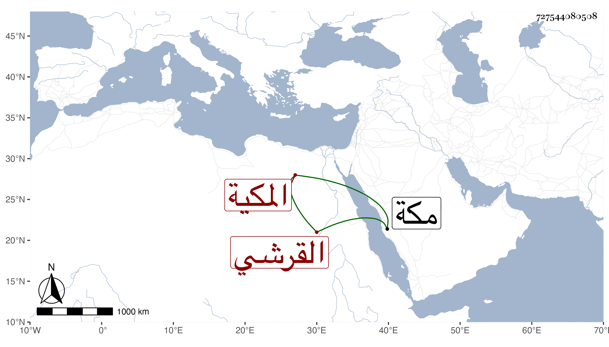

0902Sakhawi.DawLamic.ITO20230111-ara1.EIS1600.727544080508
Biography ID: 727544080508
653
فاطمة ابنة الكمال أبي البركات محمد بن علي بن أبي البركات محمد بن أبي السعود محمد بن حسين بن ظهيرة القرشي المكية . زوجها ابن عمها الجمال أبو السعود لاخيه علي ابن عمها وكان المهم في سنة أربع وتسعين ، وماتت في عصر سلخ ذي الحجة سنة خمس وتسعين بمكة وصلى عليها ودفنت مستهل سنة ست وتسعين عفا الله عنها ، ودفنت بقبة ابيها ولعلها شهيدة فانها أثر نفاس .
